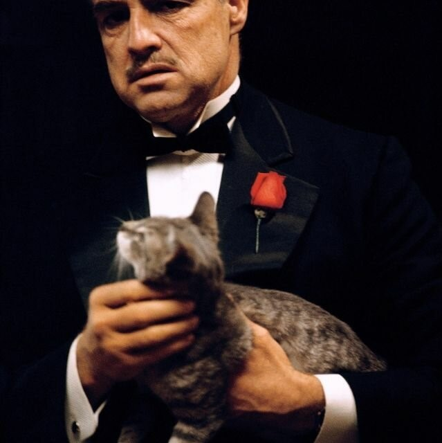
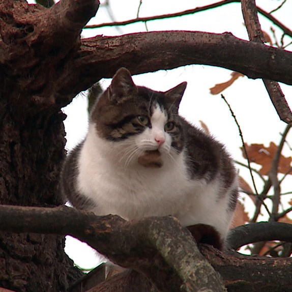
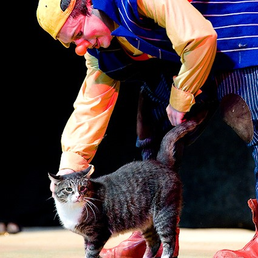
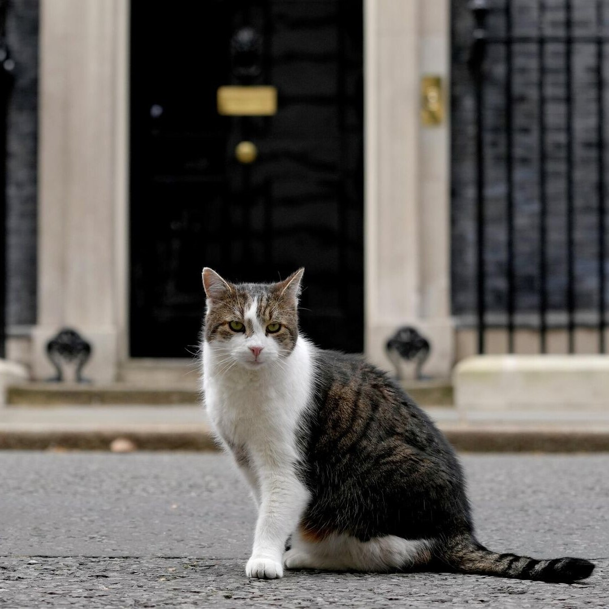

Как вы уже поняли Кот Борис не простой кот. Он был одним из главарей итальянской мафии, но из-за того что другая итальянская мафия стала подозревать, что всем заправлял Кот, а также из-за задержания его правой и левой рук, хвоста и левой ноги, Борису некем стало управлять и пришлось бежать в СССР. Он попытался завоевать СССР, но из-за другого климата, а также из-за менее качественного корма, этого сделать не удалось. Тога Кот Борис устроился дегустатором на небольшой колбасный завод. Там работал и подворовывал продукцию “на черный день”. Но после развала СССР Бориса уволили с завода. В 90-е Коту пришлось особенно тяжело. Поначалу он держался, но, когда закончились запасы колбасы, он начал охотиться на воробьев. Правда продолжалось это не долго. Через некоторое время его взял Куклачев. И так сказать помог встать на лапы. Благодаря выступлениям Кот Борис понял что нужно Русским людям и это стало его секретом. Именно тогда появился его знаменитый секет. Он стал манипулировать людьми и заставлял делать то, что выгодно ему. С начала он манипулировал буфетчицей, чтобы помучать самый вкусный корм, но потом он вспомнил прошлое. Кем же он манипулировал до сих пор остается загадкой, но одно мы знаем точно - Кот Борис пытался втереться в доверие Борису Джонсону, а вот удалось ему это или нет остается загадкой…